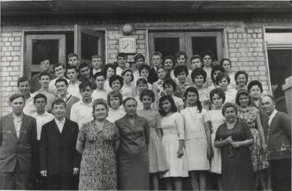

Мiсцезнаходження моєї школи
Сайт моєї школи
Я почав вчитися в ХЗОШ №49 у 2009 році
Девіз школи
Школа була моїм другим домом .Там в мене було дуже багато друзів , з якими я спілкуюсь зараз. В мене був дружній клас , всі однокласники допомогали один одному і моя класна керівниця незважаючи на наш бешкетний клас також в усьому нас підтримувала
Про себе я можу сказати,що школа наспаравді була моїм другим домом. Вона була мені близькою , бо там я міг здобувати знання,іноді не зовсім мені потрібні,та спілкуватися зі своїми товаришами. Школа - це не тільки місце, де ми отримуємо нові знання,але й місце, де знаходимо нових друзів.
Тому я дуже вдячний школі за тих людей , з якими я там познайомився , та з якими після школи я спілкуюся по цей день
Школа була першим етапом людського життя , за нею слідує вищий навчальний заклад ,де я зараз і перебуваю.
Рік за роком ми дорослішаємо. Мабуть, тому і наша любов до школи зазнає змін. Замість палкого захвату ми відчуваємо рівне й дуже хороше почуття спокою й захищеності, яке дарують оновлені стіни школи. Ми знаємо, що наш учнівський труд не є марним. Ось за. це, я вважаю, і треба любити свій другий дім – школу.
Історія школи
Рік заснування школи 1963 рік
